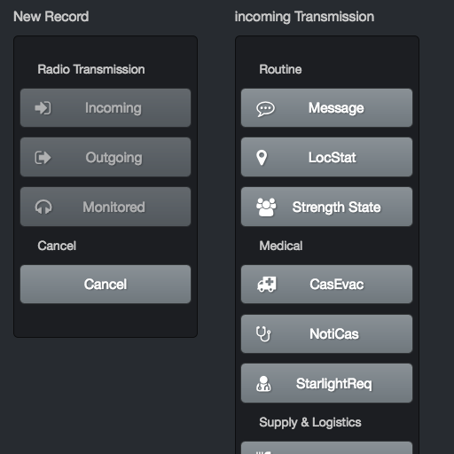
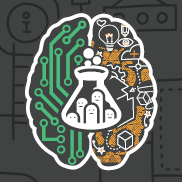

Foogi
Smart Outbound Scheduling for Sales
Technologies:
Ruby on Rails, EmberJS, CSS, Bootstrap, Postgres, AWS, Firebase, OAuth2, RESTful APIs
Skills:
Lean MVP design, customer interaction, UX, Marketing, SEO, growth strategies, raising capital, teamwork,
remote teamwork, leadership, self-motivation, flexibility, cost/benefit analysis, small business financials,
company directorship, Kanban development
Scheduling is complicated.
The focus of my life for the last 3 years.
The Problem
No one wants to share their calendar with strangers on the internet, or worse, someone who wants to sell you something.
Tony Ockleshaw head of Sales at Tigerspike has said that "Getting the first meeting feels as good as making a sale",
but how do you get that first meeting?
Without transparency into your lead's calendar (which you're not going to get) there's a lot of friction and pain
as you play phone or email tag to try to negotiate a timeslot.
So how do you build trust?
The Solution
Foogi.
A secure, private platform that lets you visually and intelligently compare your calendars without sharing any private data.
Foogi lets you transparently book meetings with clients without sharing any calendar events, just live availability
Integrated into your email and calendar across Google Apps, Office 365 and soon iCloud.
But this is just the first step.
Currently under development is the technology to securely build insights into our users' calendar data without ever exposing
that calendar data to Foogi or anyone else.
In other words, we are building an intelligent, private suggestion engine that never exposes any personal
data to either party or Foogi.
When it comes to scheduling tools, people often say "Fast, Simple or Secure: Pick two". We believe you
can have all three.
visit

The Command Post
Handling the administrative tasks of a 600-member Cadet Unit base of operations in the field.
Challenges:
Offline, Must be platform agnostic, must be built from the ground up in a week, data integrity is critical, must be maintainable by students with little to no time nor experiece, must teach maintianing students valuable skills
Technologies:
Electron, NodeJS, ES6, EmberJS, Pouch/CouchDB, CSS, Bootstrap
Scenario:
Saturday, March 25th: A message arrives from a student at my old high school - home of the largest cadet unit in the southern hemisphere.
Can you make some changes to that software you wrote for us in 2005? Before camp next weekend?
Damn. that was in VB .Net 2.0, before I even used source control, and I've had data loss at least once since then.
Hmm.
Can I rebuild it in my spare time within a week? Let's give it a go!
Requirements
The app currently runs on an old-ish laptop with no reliable internet access (remote camp locations) and unreliable power (generators go down every 8 hours for refuel)
The current hardware is end-of-life and the rebuild shouldn't tie the school into any infrastructure decisions, rather, it needs to be as platform agnostic as possible — if the cadet unit decides to use ruggardised tablets instead of a windows laptop, or maybe a home-built station using a raspberry pi, the solution should be adaptive not restrictive.
I don't want to be the single point of failure maintaining this tool. Also, this is the perfect opportunity for budding engineers to learn modern software development tools and techniques, so the app needs to be built well using future-employable languages and tools
The result
The app was built and is a massive improvement on its predecessor (unsurprisingly). BUT this is actually a catalyst for the creation of a platoon of students who will be responsible for building and maintaining advanced technological tools used by the unit.
Stay tuned!
github

Startup Weekend Brisbane 2017
Project: Underscored - Supporting Emerging Bands Online
A Creative Tech startup built in 54 Hours
Skills:
Lean MVP design, collaboration, customer interaction, UX, Marketing, teamwork, leadership, self-motivation,
flexibility, communication, presentation, adapting to sudden change.
Challenges Overcome:
Unifying a team of strong egos, customer development in a unfamiliar space, rapid pivots and iteration.
flexibility
A startup with a validated business model and customers after a weekend of work is deeply satisfying.
Taking everything I've learnt in the past three years and applying it in a super-concentrated, raw weekend of power was mindblowing.
I'll write up a decent analysis of the weekend when I get a moment to myself.
But for now, have a look at our
first pitch
(technical troubles and mistakes included) and the accompanying
slide deck
Holistic Auth
Simplified, multi-provider OAuth2 authentication and API consumption for Rails and Single Page
Apps
(just rolls off the tongue, doesn't it?)
Technologies:
OAuth2, SSL, Ruby, Rails, Google APIs, Microsoft Office 365 / Graph APIs, REST, CI
Skills:
API Design, Security Design, integration testing, behaviour-driven development, mitigating code smells,
microservice design, self-motivation
Simplifying OAuth2 authentication and API consumption
OAuth2 login for your SPA React or Ember front-end app? Easy. Just copy and paste a snippet.
How about a traditional server-rendered Rails app? Still easy. Copy and paste a snippet, maybe map some column
names.
Integrating a single flow that authenticates with your backend and authorises your front-end session in a transparent
manner to your user? That's hard.
What if you want to consume that identity provider's API to manage their calendar, contacts etc as well? Now it's
really tricky.
Holistic Auth handles all the boilerplate of dealing with providers like Google and Microsoft, exposing a clean
API to developers and can be easily extended to support new providers (eg LinkedIn or Facebook).
You're welcome.
github
Homely
Device-agnostic Home Automation
Technologies:
Digital & Analog circuits, Embedded Systems, C, Java, Android, Arduino, Ruby, Rails, Websockets, CI
Skills:
Collaboration & teamwork, UX, flexibility, presentation, agile development, hardware hacking, prototyping
& soldering
Have you bought a smart thingy from somewhere that insists on using its own app? Maybe it comes with a weird and
complicated remote that's entirely unnecessary.
Homely will have it talking with everything else you own and you can control it all from your phone.
I started work on this in 2012, before the announcement of HomeKit, before Google Weave and before the conception of NinjaBlocks'
Ninja Sphere. This is still an ongoing problem that Google, Apple and everyone else have
failed to tackle.
Apart from Homely, the first actual viable commercial solution I've found is XiaoMi's MiHome, and that's still full of issues.
I feel I owe the world an apollogy for abandoning this project but you gotta eat some times.
github